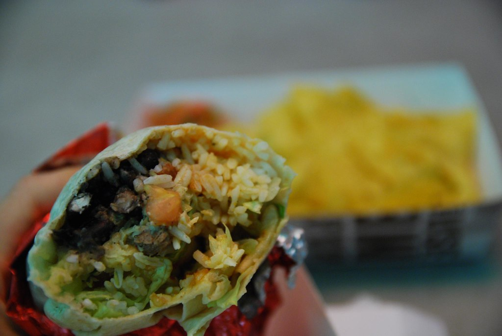

Beef burritos

Description
A classic for watching games movies or just enjoying at any moment.
This recipe is delicious and easy to make.
Ingredients
- 1lb ground beef
- Salt & black pepper powder
- Olive oil
- 2 Onoins, 2 tomatoes, coriander, white vinegar and garlic powder
|
- Mexican seasoning
- flour tortillas
- grated cheese
- guacamole
- Sour cream
Steps
- Chop the tomatoes and onions in small cubes and put the in a container. chop the coriander and add it to the container. ad a sprinkle of white vinegar and a steaspoon of garlic powder. mix a,ll and set aside. Thats some pico' de gallo
- add seasonings to the ground beef and mix well. put the beef in a pan with high heat to cook. stir from time to time to avoid sticking to the pan.
- add some guacamole and sour cream to a tortilla. then add some pico de gallo and a generous ammount of beef, top ip up with some cheese.
- Roll and enjoy
|